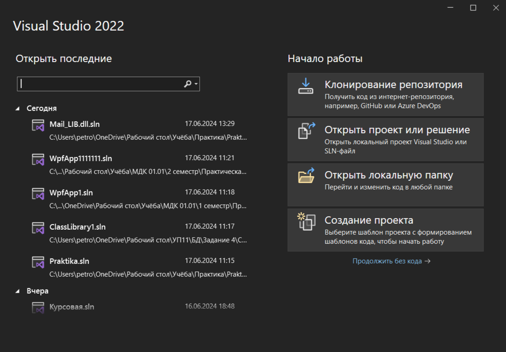

В мире очень много разнообразных языков программирования. Каждый из них предназначается для определенных целей. Некоторые – для кроссплатформенной разработки, а какие-то «заточены» под определенные операционные системы. Отдельного внимания заслуживают
языки запросов. С их помощью удается работать с базами данных (БД) и разнообразной информацией. Одним из самых популярных таких средств является SQL. Далее предстоит познакомиться с ним получше. Нужно выяснить, что собой представляет SQL,
какие особенности, преимущества и недостатки он имеет. А еще – рассмотреть виды СУБД, где используется данный язык. Предложенная ниже информация рассчитана на широкий круг лиц. Она подойдет как обычным пользователям, так и IT-специалистам.
Определение SQL (Structured Query Language) – это структурированный язык запросов. Он создан, для того чтобы получать из баз данных необходимые сведения. Представляет собой средство формирования запросов. Данный инструмент является декларативным
языком программирования, применяемый для создания, модификации, а также управления данными в реляционных базах данных. Относится к информационно-логическим языкам, использующихся для работы с информацией, хранящейся в базах: описания; изменения;
удаления записей; изменения структур таблиц; выборки данных из одной или нескольких таблиц (согласно заданному условию); формирования в БД новых таблиц; извлечения. Раньше SQL имел ограниченную функциональность и использовался только для работы
с информацией в БД. Со временем он обогатился и приобрел возможность описания и управления новыми хранимыми объектами (индексы, представления, процедуры, триггеры). Он стал больше походить на обычный язык программирования за счет новых свойств
и черт.
Сейчас SQL до сих пор остается основным средством работы с базами данных, но, в отличие от своих первых версий, он более функционален. Области применения Язык SQL – это не
полноценный язык программирования. С его помощью не получится написать игру или приложение/веб-сайт. Только внутренняя разработка (бэкэнд) невозможна без запросов. Именно они формируются благодаря SQL. Поиск данных в поисковых системах – это
тоже использование SQL. Пользователь должен задать интересующие его параметры, а затем направить запрос на серверную сторону поисковика. После этого осуществляется поиск необходимой информации с дальнейшим ее выводом на экран устройства. SQL
– язык, который может пригодиться самым разным специалистам: Продуктовым маркетологам и аналитикам. За счет знания этого инструмента специалисты могут не зависеть от разработчиков. Они получат возможность самостоятельно работать с данными.
Тестировщикам и разработчикам. За счет SQL такие специалисты способны самостоятельно формировать базы данных для быстрой и надежной, а также стабильной работы с информацией. Менеджерам и руководителям. SQL дает возможность специалистам, находящихся
на руководящих должностях, самостоятельно обращаться к БД, осуществлять контроль за работой компании и в режиме реального времени получать информацию о положении дел.

Код библиотеки
public static bool check_login(string login)
{
string pattern = "^[a-zA-Z0-9_.+-]+@[a-zA-Z0-9-]+\\.[a-zA-Z0-9-.]+$";
Regex regex = new Regex(pattern);
return regex.IsMatch(login);
}
public static bool check_password(string passwordd)
{
if (passwordd.Length < 8)
{
return false;
}
if (!Regex.IsMatch(passwordd, "[a-zA-Z]"))
{
return false;
}
if (!Regex.IsMatch(passwordd, "[0-9]"))
{
return false;
}
if (!Regex.IsMatch(passwordd, "[!@#$%^&*()_+\\-=\\[\\]{};':\"\\\\|,.<>\\/?]"))
{
return false;
}
return true;
}
Код в приложении
if (string.IsNullOrWhiteSpace(name.Text) || string.IsNullOrWhiteSpace(name2.Text) || string.IsNullOrWhiteSpace(login.Text) || string.IsNullOrWhiteSpace(password.Text) || string.IsNullOrWhiteSpace(rol.Text) || string.IsNullOrWhiteSpace(usl.Text))
{
MessageBox.Show("Все поля обязательны к заполнению!");
}
if (MailValidator.check_login(login.Text) && MailValidator.check_password(password.Text))
using Mail_LIB.dll.Mail_LIB.dll;
В мире очень много разнообразных языков программирования. Каждый из них предназначается для определенных целей. Некоторые – для кроссплатформенной разработки, а какие-то «заточены» под определенные операционные системы. Отдельного внимания заслуживают
языки запросов. С их помощью удается работать с базами данных (БД) и разнообразной информацией. Одним из самых популярных таких средств является SQL. Далее предстоит познакомиться с ним получше. Нужно выяснить, что собой представляет SQL,
какие особенности, преимущества и недостатки он имеет. А еще – рассмотреть виды СУБД, где используется данный язык. Предложенная ниже информация рассчитана на широкий круг лиц. Она подойдет как обычным пользователям, так и IT-специалистам.
Определение SQL (Structured Query Language) – это структурированный язык запросов. Он создан, для того чтобы получать из баз данных необходимые сведения. Представляет собой средство формирования запросов. Данный инструмент является декларативным
языком программирования, применяемый для создания, модификации, а также управления данными в реляционных базах данных. Относится к информационно-логическим языкам, использующихся для работы с информацией, хранящейся в базах: описания; изменения;
удаления записей; изменения структур таблиц; выборки данных из одной или нескольких таблиц (согласно заданному условию); формирования в БД новых таблиц; извлечения. Раньше SQL имел ограниченную функциональность и использовался только для работы
с информацией в БД. Со временем он обогатился и приобрел возможность описания и управления новыми хранимыми объектами (индексы, представления, процедуры, триггеры). Он стал больше походить на обычный язык программирования за счет новых свойств
и черт. Сейчас SQL до сих пор остается основным средством работы с базами данных, но, в отличие от своих первых версий, он более функционален. Области применения Язык SQL – это не полноценный язык программирования. С его помощью не получится
написать игру или приложение/веб-сайт. Только внутренняя разработка (бэкэнд) невозможна без запросов. Именно они формируются благодаря SQL. Поиск данных в поисковых системах – это тоже использование SQL. Пользователь должен задать интересующие
его параметры, а затем направить запрос на серверную сторону поисковика. После этого осуществляется поиск необходимой информации с дальнейшим ее выводом на экран устройства. SQL – язык, который может пригодиться самым разным специалистам:
Продуктовым маркетологам и аналитикам. За счет знания этого инструмента специалисты могут не зависеть от разработчиков. Они получат возможность самостоятельно работать с данными. Тестировщикам и разработчикам. За счет SQL такие специалисты
способны самостоятельно формировать базы данных для быстрой и надежной, а также стабильной работы с информацией. Менеджерам и руководителям. SQL дает возможность специалистам, находящихся на руководящих должностях, самостоятельно обращаться
к БД, осуществлять контроль за работой компании и в режиме реального времени получать информацию о положении дел.